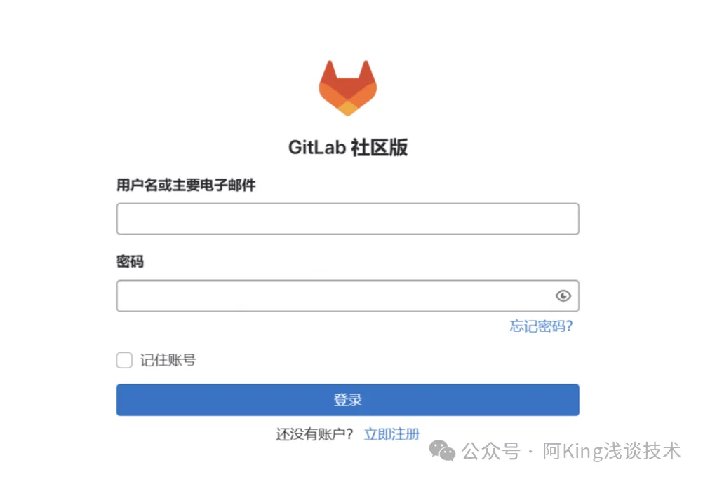

在线安装：https://www.cnblogs.com/KingArmy/p/11017529.html
离线安装：https://www.cnblogs.com/KingArmy/p/18270258
选择的是官方稳定版本，gitlab-ce 为稳定版本，后面不填写版本则默认 pull 最新 latest 版本，pull 镜像
# 1、拉取镜像
docker pull gitlab/gitlab-ce
# 打包镜像，如果是离线环境，上面那一步需要在一台有外网的机器拉取，然后打包镜像到本地
docker save -o gitlab.tar gitlab/gitlab-ce:latest
# 加载镜像，这个是在离线环境中，离线镜像包上传之后，把镜像加载到docker本地仓库中
docker load < gitlab.tar
# 查看镜像
docker images
1）创建 gitlab 的配置、数据、日志目录，防止数据丢失，便于问题排查
创建目录，这个目录可以自己更改
mkdir -p /data/gitlab/config
mkdir -p /data/gitlab/logs
mkdir -p /data/gitlab/data
2）编写构建容器脚本，并初始化配置文件
docker run -d -it \
-p 10010:10010 \
-p 8013:22 \
--name gitlab \
-v /data/gitlab/config:/etc/gitlab \
-v /data/gitlab/logs:/var/log/gitlab \
-v /data/gitlab/data:/var/opt/gitlab \
-v /data/gitlab/logs/reconfigure:/var/log/gitlab/reconfigure \
gitlab/gitlab-ce:latest
直接执行这个脚本，然后编辑 /data/gitlab/config/gitlab.rb 文件
#添加下面3行
external_url 'http://127.0.0.1:10010'
gitlab_rails[‘gitlab_ssh_host’] = '127.0.0.1'
gitlab_rails[‘gitlab_shell_ssh_port’] = 8013
3）容器编译配置
#上面的都执行完之后，重启容器更新授权
docker restart gitlab && docker exec -it gitlab update-permissions
#重新载入配置文件
docker exec -it gitlab "gitlab-ctl reconfigure"
# 启动
docker exec -it gitlab "gitlab-ctl start"
#查看密码,里面有一个Password的字符串就是root账户对应的密码
cat /data/gitlab/config/initial_root_password
4）重启
docker restart gitlab
docker logs -f gitlab
日志如果没有报错那就等着，中间你可以尝试请求10010端口，当刷新到请求日志的时候就是启动成功了，由于服务很多，所以启动过程很慢，具体时间根据服务器性能有所偏差
